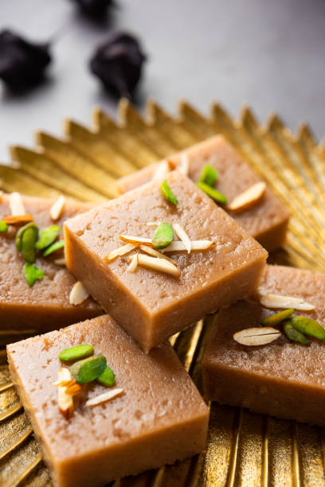

Gulab Jamun
Ingredients
- 1 cup full-fat milk powder
- 2 tablespoons all-purpose flour
- 1/8 teaspoon baking powder
- 1 tablespoon ghee
- 5 to 6 tablespoons milk, as needed
- Oil for deep-frying
- 1 cup sugar
- 1-1/4 cup water
- 2 green cardamom pods
- 1/8 teaspoon rose essence or 1 to 1-1/2 teaspoons rose water
- 1/4 teaspoon lemon juice, to prevent the sugar syrup from crystallizing
Recipe
- Step 1: Prepare the dough
- Step 2: Let the dough rest
- Step 3: Prepare the sugar syrup
- Step 4: Roll the jamuns
- Step 5: Fry the jamuns
- Step 6: Add jamuns to the sugar syrup
- Step 7: Garnish

Barfi
Ingredients
- 300 ml condensed milk
- 1 cup water
- 2 1/2 cup milk powder
- 1 teaspoon powdered green cardamom
- 2 tablespoon ghee
- 1 handful pistachios
- silver vark as required
- 1 handful almonds
Recipe
- Step 1 Make the milk powder dough
- Step 2 Grate the dough & heat some ghee
- Step 3 Cook the grated dough with cardamom
- Step 4 Garnish with silver varq & almonds before serving
